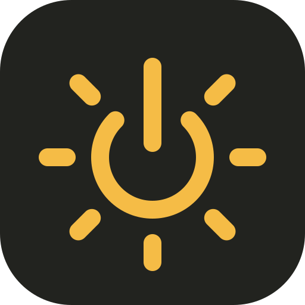

AlwayLight.
STAY ON. KEEP CREATING.
A LITTLE LIGHT, A LITTLE LONGER
让灵感，持续亮着。
正在读取当前状态…
定时结束
到时恢复系统默认距离自动结束
01:00:00先选择一种保持运行的模式，即可设置定时。

STAY ON. KEEP CREATING.
A LITTLE LIGHT, A LITTLE LONGER
正在读取当前状态…
距离自动结束
01:00:00先选择一种保持运行的模式，即可设置定时。